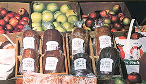

With a few good recipes, some common sense, and a little bit of get-up-and-go, you can be . . .
Do you make your own bread? If so, the delectable flavor and aroma of hot-from-the-oven loaves are familiar to you. There are many folks, however, who have never even tasted - let alone baked - homemade bread.
Well, you can introduce such people to the joys of "the staff of life" . . . watch their nostrils quiver at the irresistible fragrance . . . know they're savoring all that whole-grain goodness . . . and make yourself a tidy part-time income to boot! How do I know? Because I do it . . . you see, baking and selling bread is something an "ordinary" housewife like me can do to fight the recession blues.
GETTING STARTED
Some people do market studies, and investigate all manner of possibilities, before setting up in business. Well, I wish I could say that's how I got started, but it wasn't. The fact is that baking for profit more or less crept up on me. My enterprise actually began when a friend stopped by to visit one day as I was preparing our family's bread. Well, she was so tantalized by the aroma that I insisted she take a loaf home with her.
"My family devoured your bread!" she exclaimed the next time I saw her. "If you'll bake me two loaves a week, I'll pay you anything you want to charge!"
Needless to say, her offer was tempting. After all, baking two more loaves a week wouldn't make a lick of difference in my schedule, and a little extra money would certainly come in handy . . . so I agreed.
But the next thing I knew, her boss wanted a weekly loaf. Then her sister asked for one . . . her babysitter wanted two . . . and other folks began to get a "whiff" of my activities. In short, I soon figured out that there was a large - and largely untapped - market for homebaked bread, so I gathered my recipes and embarked on a new career.
My preliminary strategy session consisted simply of calculating what each loaf cost me. Then I listed a few of my favorite kinds of bread, together with prices that I thought were fair, and had that sheet copied. Finally, I took a deep breath and got a business license under the name "Gail's Bread Alone".
TO MARKET, TO MARKET. . .
Since I was officially "in trade", it was time to try to round up the customers. To begin, I gave a bread list to each of my friends and asked them to spread the word (and to buy a loaf or two). Next, I posted the sheets on every bulletin board I could find, and took copies into all the restaurants (a grand total of five) in our little town. Soon the orders began to come in.
When summer arrived, I rented a space at the Saturday farmers' market in a larger town nearby. The modest $2.00 weekly investment paid off handsomely . . . I was able to pocket between $50 and $60 nearly every weekend.
Furthermore, the farmers' market introduced me to the delights of barter. One Saturday I parted with a dozen cinnamon rolls and two loaves of bread in return for a ferocious banty hen and her nine chicks! Other friendly swaps kept me well supplied with such luscious local fare as blackberry honey, eggs, and sweet corn. I was sorry when the farmers' market closed in the fall . . . but my home-based enterprise continued - and continues - to grow.
MAKING IT WORK
I was an enthusiastic home baker before I went into business, and I still am, but producing goods for sale does involve a little extra effort. Here are some tips that can help you do what needs to be done to "earn some bread" with your own homemade specialties.
[1] If your state or county issues licenses, get one. It's not hard to do so, probably not expensive (mine costs $25 a year), and may well be mandatory. A license will testify that your kitchen is sanitary and that you're serious about your work. Best of all, it gives you the privilege of buying your raw materials at wholesale prices.
Home kitchens might be licensed through a state agricultural department (as they are here in Oregon) or through a county or state health department. Try the health departments first: If they don't issue licenses, they can likely tell you who does. [EDITOR'S NOTE: MOTHER'S state, North Carolina, doesn't require a license for a home kitchen . . . but it does have regulations - which are enforced by inspectors from the Food and Drug Protection Division of the Department of Agriculture - regarding the facilities and procedures that may be used in home food-processing operations.]
By the way, your license will probably cover only "plain" baked items . . . that is, bread, rolls, bagels, etc. It's best not to sell any cream pies, custard-filled pastries, or similar items that could spoil and make someone sick.
[2] Maintain good records! This is vital . . . since such data will probably be the only tool that can tell you whether or not you're making a profit on your goods. Furthermore, some of your expenses can be deducted from your bread income at tag time (yes, you do have to give Uncle Sam his cut), but you won't be able to take advantage of deductions that you forget . . . or can't verify.
Record-keeping needn't be a formidable chore if you simply make it a regular practice. For instance, before I bake anything for sale, I figure the cost of the ingredients and make up a price sheet for each recipe. Of course, that calculation does involve spending some time weighing and measuring the contents of standard-sized packages of flour, spices, etc. so that I know exactly how many cups, ounces, or whatever are contained in each package. Once that's done, though, I simply divide the price of the package by the number of cups or ounces to arrive at the cost of each unit. Then it's easy to figure up what I've spent for the ingredients in any one recipe.
I also write down all my orders in a 35 cents receipt book - the kind with carbon paper attached - and total them at the end of each month. I then subtract the ingredients cost of each order, and my mileage expense for the month (which I record in a little notebook in my car), and what's left is my profit !
[3] Keep track of your supplies. After all, a frantic dash to the midnight market to pick up the molasses you thought you had could really eat into your net income! I shop for perishables once a week and purchase staples, on a monthly basis, through a food co-op or (sometimes) a grocery wholesaler.
[4] Stick to what you do best. Early on, I tried to offer every kind of bread I could think of . . . from bagels and brioches to Swedish limpa. After a few charred fiascoes, though, I narrowed my list. My mainstays now are whole wheat bread, oatmeal bread, and cinnamon rolls.
[5] Scout for customers. Distribute your flyers wherever you can. Get to know potential buyers who work in local offices, and members of civic clubs that meet over coffee and - all too often - store-bought, soggy doughnuts. You can offer such people better fare! Most areas have craft festivals and farmers' markets going on much of the year, too . . . just keep your ears open, read the newspapers, and talk to your local chamber of commerce to find out about forthcoming opportunities.
[6] Don't be afraid to charge a fair price for your wares. You're providing a product that people probably can't get everywhere.
[7] Bake with love . That may sound corny, but it's really important. If you lavish the same care on a to-be-marketed coffeecake as you do on your own family's bread, the treat will have a special touch that commercial bakeries can't equal.
SUMMING UP
Of course, the success of my business can be measured by answering two questions. First (and most important), do I like being an entrepreneur? My response to that is an enthusiastic "you bet"! Then, am I making a living at it? Well, I have to admit that I'm not getting rich just yet. After all, my baking is only a part-time job. But there's plenty of potential for more work. In fact, I recently marked the first anniversary of Gail's Bread Alone by going into partnership with two other farm wives. We now call ourselves the Country Pantry, and we offer just about any kind of baked goody a person could wish for. We're already supplying a delicatessen, a catering firm, a women's club, and several private patrons. Maybe, someday we'll even open our own bakery. . . but in the meantime we're doing a job that we - and our customers - like very much.
OUT TO LAUNCH
Chances are that at least some of you will want to try your hands at baking for sale. Well, here's a recipe to get you started. You can alter it to suit your own taste, or use it as is . . . to make eight satisfyingly hearty loaves at a cost of about 65 cents each (depending on your sources of supply).
FARMERS' MARKET WHEAT BREAD
1/2 cup of honey
1/2 cup of light molasses
2-1/2 cups of dry milk
1/2 cup of oil
3 scant tablespoons of salt
2 cups of rolled oats
2 quarts of water
1/4 cup of active dry yeast
8 eggs
12 cups of whole wheat flour
10 cups of unbleached flour
In a large bowl, combine the first six ingredients. Then stir in 1 quart of boiling water, followed by 1 quart of cold water. When the mixture has cooled to wrist warmth, blend in the yeast and allow it to bubble. Now, break in the eggs and beat the batter vigorously.
With that done, add the whole wheat flour - two cups at a time - and stir the dough until it pulls away from the sides of the bowl in elastic strands. Next, work in the unbleached flour, kneading in the last of it before you turn the dough out onto a lightly floured board and knead it smooth. Then oil a clean bowl, put the dough in, and let it rise - in a warm spot - to twice its original bulk (that'll take approximately 50 minutes).
After it has risen, turn the dough out and cut it into eight equal lumps. Shape each one into a loaf and bake them in greased pans, at 325 °F, for 30 to 40 minutes . . . or until they're well browned and sound hollow when tapped. [EDITOR'S NOTE: In the course of our taste test - which, incidentally, resulted in contented comments and some busy breakfasting around the office - MOTHER's baker found that the dough produced higher loaves, with a somewhat lighter texture, when it was allowed to rise a second time in the pan before being baked.]
|
 |
|
|